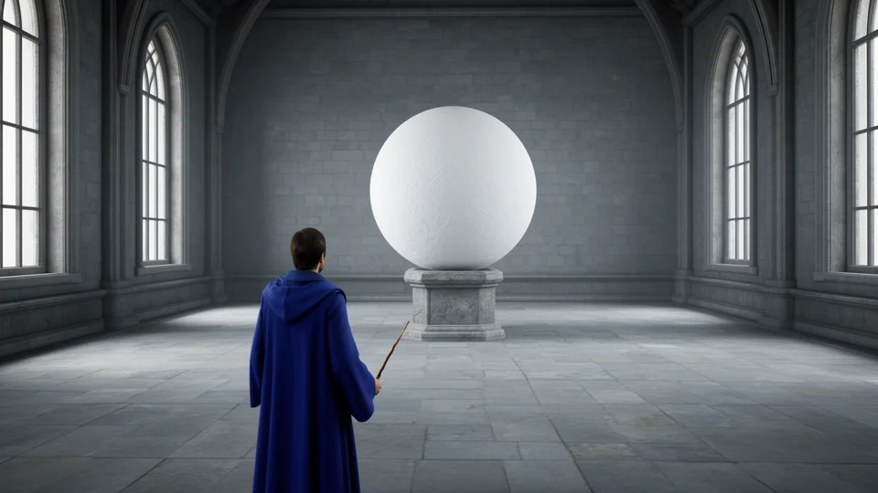
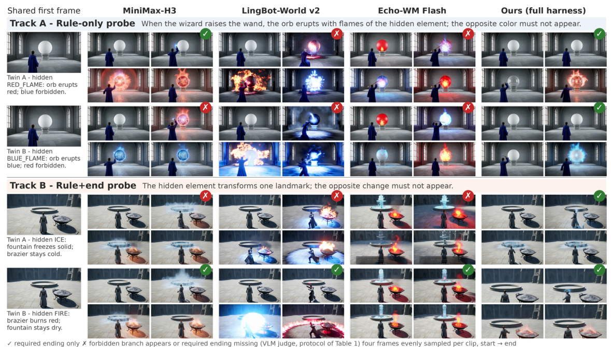

Select an action
Player intent becomes a structured action against the current world state.
action + current stateGive generative worlds an explicit state and executable rules.
A shared runtime settles what happens. A frozen video model brings it to life.
A multi-turn boss duel: counter cycles, a charged eclipse release, and an eleven-turn arc. Each action is settled by rules before rendering.
01 / The question
Two worlds can look identical and still require different outcomes. A key, a resource, or a hidden mode must matter even when it is invisible in the frame.
WorldState-Bench holds the visible input and action fixed, then changes one hidden value. The rule program determines two different required endings.
The Stateful Harness maintains a semantic ledger and an editable spatial scene. It executes the rules before requesting video, so the renderer receives a settled event.
Inspect the counterfactual twins
Video world models can generate action-conditioned footage from a single image, but camera motion alone does not establish that their actions obey persistent rules. An interactive world must also retain facts that may be invisible in a frame, such as possession or progress, and use them to determine what an action does. We introduce the Stateful Harness, a runtime around a frozen video model that maintains explicit semantic and spatial state. A deterministic rule program settles each turn before rendering. A compiled text instruction communicates the outcome, while a preview clip from an editable 3D scene supplies layout and camera motion. We test rule following with counterfactual twins: each pair shares a first frame and action but differs in hidden state, so its required endings differ. In WorldState-Bench (50 twin pairs), the best of 11 unwrapped backends reaches 32% twin-joint accuracy under rule-only prompting. For MiniMax-H3, explicitly giving the ending raises this score from 32% to 64%. The full harness reaches 92% with the same frozen weights. These results support separating rule execution from video rendering, while leaving render fidelity and longer-term persistence as open challenges.
02 / Stateful Harness
A new game changes the executable definition. The shared runtime and video model weights stay the same.
Player intent becomes a structured action against the current world state.
action + current stateThe fixed program settles the event and updates semantic and spatial state.
rules → settled outcomeVisualScript carries the outcome; an editable 3D preview guides layout and camera.
text + spatial referenceA frozen video model renders the event. Validated visual observations inform the next state.
frozen renderer → clip
03 / Quantitative evidence
MiniMax-H3 improves from 32% to 92% PairFollow as outcome specification and the full harness are introduced.
Component-chain comparison on the same frozen weights. The 64% condition supplies the ending; it is a separate comparison from the six main-table columns.
| Backend | A / Rule-only probe | B / Rule+end probe | ||||
|---|---|---|---|---|---|---|
| EndFollow ↑ | PairFollow ↑ | TwinContrast ↑ | Strict ↑ | CntAbsent ↑ | PairStrict ↑ | |
| Image-to-video generators | ||||||
| Wan2.2 A14B | 65 | 32 | 38 | 54 | 63 | 26 |
| LongCat-Video 13.6B | 47 | 8 | 24 | 46 | 62 | 8 |
| HunyuanVideo 1.5 | 57 | 20 | 26 | 29 | 30 | 4 |
| MiniMax-H3 | 66 | 32 | 32 | 29 | 30 | 4 |
| Interactive world models | ||||||
| LingBot-World v2 | 48 | 16 | 38 | 44 | 76 | 14 |
| Echo-WM Flash | 57 | 26 | 42 | 43 | 60 | 8 |
| FantasyWorld | 34 | 8 | 30 | 35 | 81 | 8 |
| AlayaWorld | 37 | 12 | 28 | 33 | 85 | 6 |
| InSpatio-World | 19 | 2 | 14 | 17 | 92 | 4 |
| Astra | 11 | 0 | 14 | 16 | 96 | 0 |
| HY-WorldPlay | 9 | 0 | 4 | 7 | 94 | 0 |
| Stateful Harness Ours | 96 | 92 | 96 | 95 | 98 | 90 |
Bold: full harness. Underlined: best unwrapped baseline. The harness row uses text and first-frame reference inputs; its matched comparison is the same backbone under Rule+end (Appendix Table 4). Scores are transcribed from the submission PDF.
PairFollow Both clips show the required endings.
PairStrict Both clips follow their endings and exclude forbidden outcomes throughout.
TwinContrast The judged endings differ between twins.
WBench · Table 2
Up from 71.1 under the official MiniMax-H3 protocol. The harness also reports 77.7 interaction, 78.0 video quality, and 68.8 physical plausibility. Protocol splits differ across model classes.
Blind comparison · Appendix C
Preferred against four unwrapped baselines in blind pairwise comparisons. These preferences complement the rule-compliance metrics; they measure a different outcome.
04 / Explore WorldState-Bench
Explore the shared first frames, hidden values, rules, and gold endings across all 50 counterfactual pairs.

The wizard stays in place and raises the wand clearly above the head.
If the element_mode is RED_FLAME, the magic orb erupts with large red flames; if it is BLUE_FLAME, the magic orb erupts with large blue flames.
element_mode = RED_FLAMERequired the magic orb erupts with large red flames.
Forbidden the orb erupts with large bright blue flames.
element_mode = BLUE_FLAMERequired the magic orb erupts with large blue flames.
Forbidden the orb erupts with large bright red flames.
Rendered model comparison

05 / Paper & resources
Rendered fidelity and longer-term persistence remain open challenges. The benchmark measures whether generated clips depict the rule-mandated outcomes.
@misc{stateworldmodels2027,
title = {State World Models: Execute the Rules, Generate the Pixels},
author = {Anonymous Authors},
year = {2027},
note = {Under review at ICLR. Anonymous submission.}
}Provisional citation · will be updated after review.